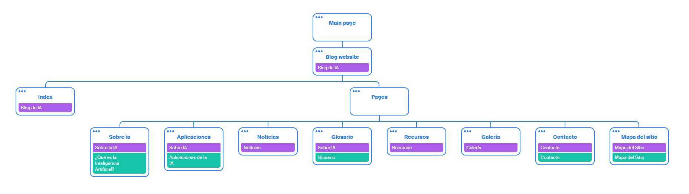

Mapa del Sitio
Índice Principal
Noticias
- La Inteligencia Artificial Revoluciona la Medicina
- IA Predice el Alzheimer Años Antes de los Síntomas
- Tratamientos Oncológicos Personalizados Gracias a la IA
- Cirugías Asistidas por Robots con Inteligencia Artificial
- IA Predice Brotes de Enfermedades Infecciosas con Mayor Precisión
- Chatbots con IA Brindan Apoyo Emocional a Pacientes
